Peiran Jiang 蒋沛然Ph.D. Student in Computational Biology, minor in Machine Learning
Ray and Stephanie Lane Computational Biology Department |
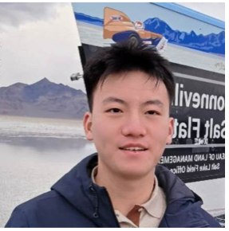 |
I am a Ph.D. candidate in Computational Biology at Carnegie Mellon University advised by Prof. Jose Lugo-Martinez . My research focuses on accelerating knowledge discovery in biomedicine by artificial intelligence, particularly in the characterization, representation, and design of biomolecular condensates. I also focus on positive-unlabeled (PU) learning theory and its applications in Biology. In phase separation study, I collaborate with Prof. Huaiying Zhang. Previously, I was fortunate to be advised by Prof. Yu Xue and Prof. Pingzhao Hu.
Carnegie Mellon University (CMU) 09/2021 - Present
Ph.D. in Computational Biology, minor in Machine Learning
Advisor: Prof. Jose Lugo-Martinez
Huazhong University of Science and Technology (HUST) 09/2016 -
06/2020
B.E. in Bioinformatics
Advisor: Prof. Yu Xue
|
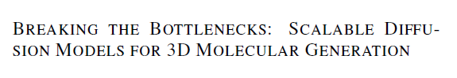 |
Breaking the bottlenecks: scalable diffusion models for 3d molecular
generation Adrita Das, Peiran Jiang, Dantong Zhu, Barnabas Poczos, Jose Lugo-Martinez ICLR 2026 2nd Workshop on Deep Generative Model in Machine Learning: Theory, Principle and Efficacy |
|
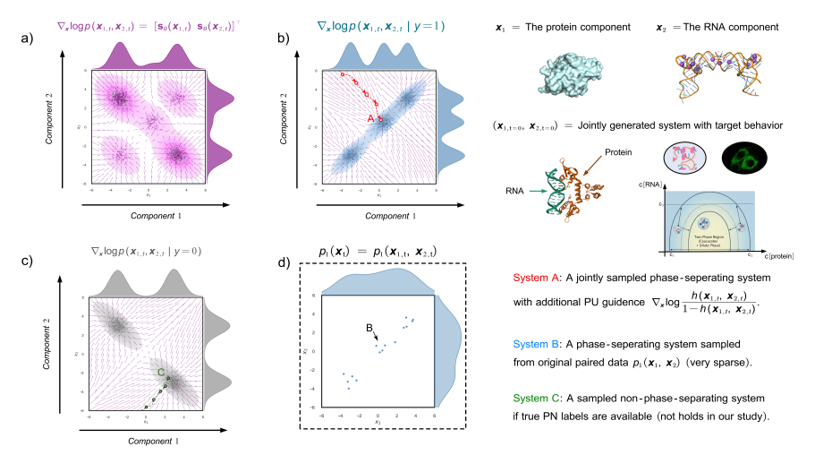 |
Design of phase-separating biosystem via joint
diffusion and positive-unlabeled guidance Peiran Jiang, Adrita Das, Weifeng Wu, Simran Sodhi, Huaiying Zhang, Jose Lugo-Martinez ICLR 2024 Workshop on Generative and Experimental Perspectives for Biomolecular Design |
|
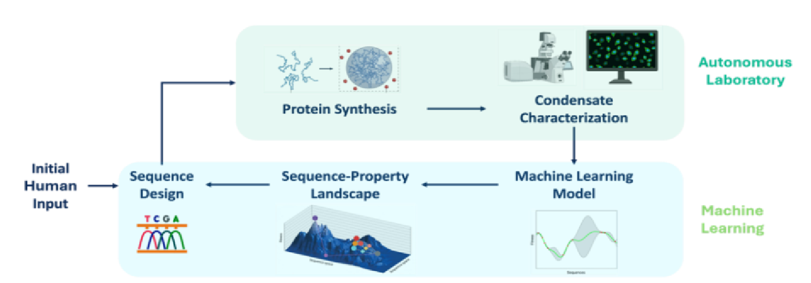 |
Machine learning-guided design of biomolecular condensates in an
automated laboratory Peiran Jiang, Weifeng Wu, Simran Sodhi, Huaiying Zhang, Jose Lugo-Martinez ICLR 2024 Workshop on Generative and Experimental Perspectives for Biomolecular Design |
|
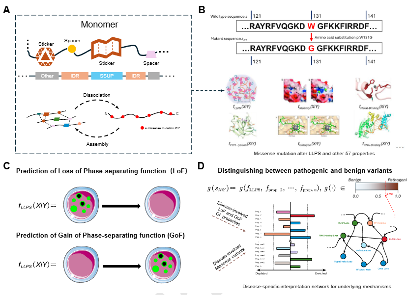 |
Quantitative and mechanism-driven interpretation of disease
mutations reveals phase separation as a missing mechanism Peiran Jiang, Jose Lugo-Martinez Preprints |
|
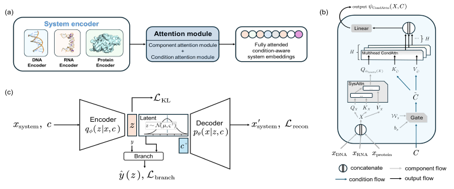 |
OpenPhase: Condition-Aware Exploration of
Multicomponent Biosystem Phase-Separating
Behavior Peiran Jiang, Adrita Das, Weifeng Wu, Dantong Zhu, Huaiying Zhang, Jose Lugo-Martinez Preprints |
|
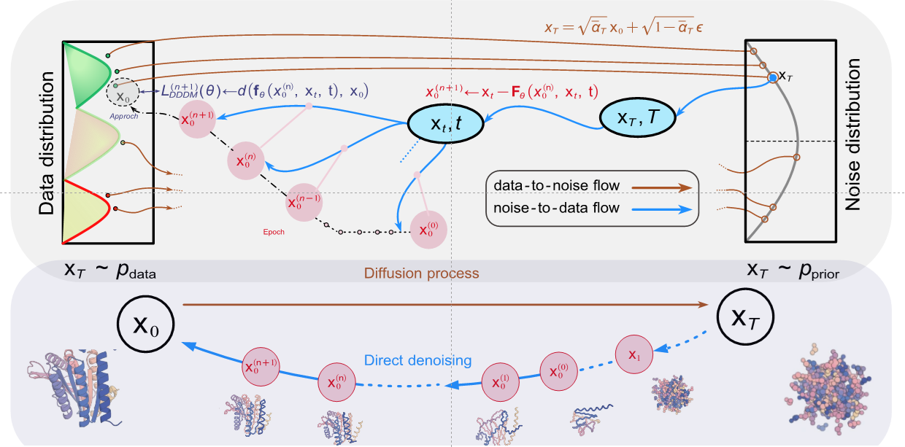 |
State-Space Architectures for Scalable Diffusion-based 3D Molecule
Generation Adrita Das, Peiran Jiang, Dantong Zhu, Barnabas Poczos, Jose Lugo-Martinez SPIGM @ NeurIPS, 2025 [paper] |
|
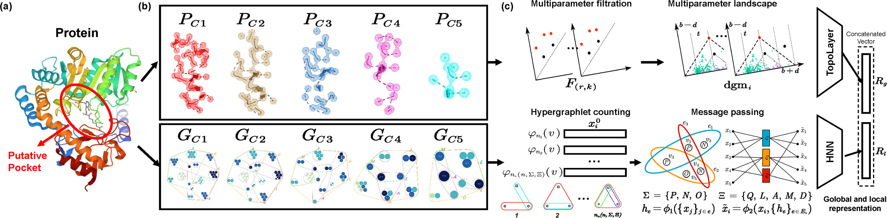 |
Combined topological data analysis and geometric deep learning reveal
niches by the quantification of protein binding pockets Peiran Jiang, Jose Lugo-Martinez Journal of Computational Biology 32 (7), 659-674, 2025 [PubMed] |
|
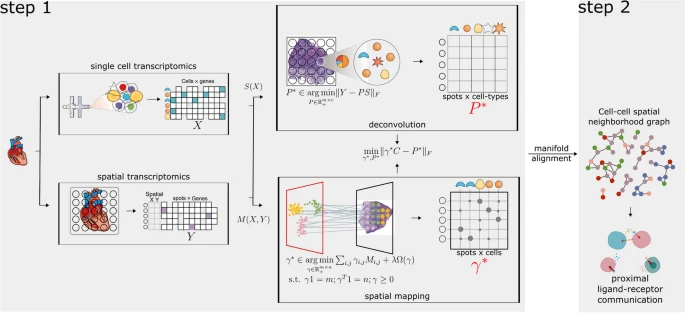 |
scDOT: optimal transport for mapping senescent cells in spatial
transcriptomics Nam D. Nguyen, Lorena Rosas, Timur Khaliullin, Peiran Jiang, Euxhen Hasanaj, Jose A. Ovando-Ricardez, Marta Bueno, Irfan Rahman, Gloria S. Pryhuber, Dongmei Li, Qin Ma, Toren Finkel, Melanie Königshoff, Oliver Eickelberg, Mauricio Rojas, Ana L. Mora, Jose Lugo-Martinez, Ziv Bar-Joseph Genome Biology 25 (1), 288, 2024 [PubMed] [Code] |
|
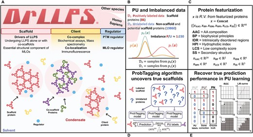 |
A hybrid positive unlabeled learning framework for uncovering scaffolds
across human proteome by measuring the propensity to drive phase separation
Peiran Jiang, Ruoxi Cai, Jose Lugo-Martinez, Yaping Guo Briefings in Bioinformatics 24 (2), bbad009, 2023 [PubMed] |
|
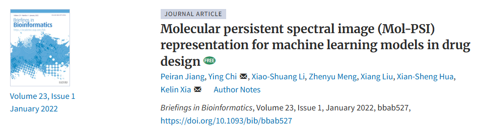 |
Molecular persistent spectral image (Mol-PSI) representation for
machine learning models in drug design Peiran Jiang*, Ying Chi*, Xiao-Shuang Li, Zhenyu Meng, Xiang Liu, Xian-Sheng Hua, Kelin Xia Briefings in Bioinformatics 23 (1), bbab527, 2022 [PubMed] [Code] |
|
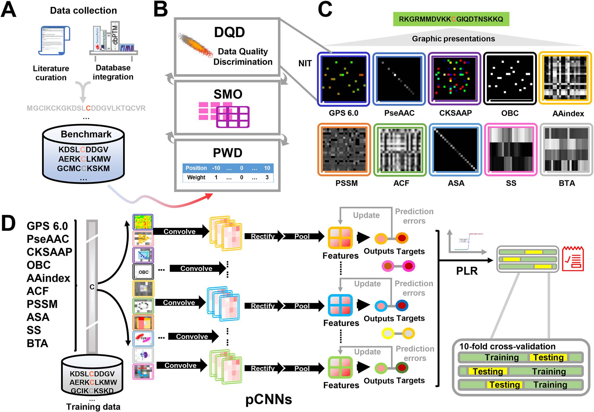 |
GPS-Palm: a deep learning-based graphic presentation system for the
prediction of S-palmitoylation sites in proteins Wanshan Ning*, Peiran Jiang*, Yaping Guo, Chenwei Wang, Xiaodan Tan, Weizhi Zhang, Di Peng, Yu Xue Briefings in Bioinformatics 22 (2), 1836-1847, 2021 [PubMed] |
|
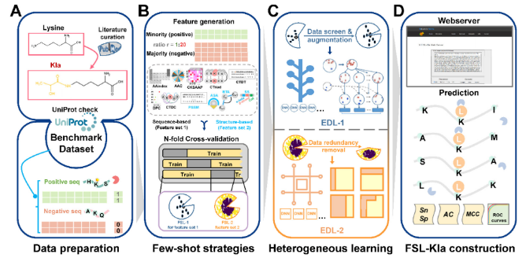 |
FSL-Kla: A few-shot learning-based multi-feature hybrid system for
lactylation site prediction Peiran Jiang*, Wanshan Ning*, Yunshu Shi, Chuan Liu, Saijun Mo, Haoran Zhou, Kangdong Liu, Yaping Guo Computational and Structural Biotechnology Journal 19, 4497-4509, 2021 [PubMed] |
|
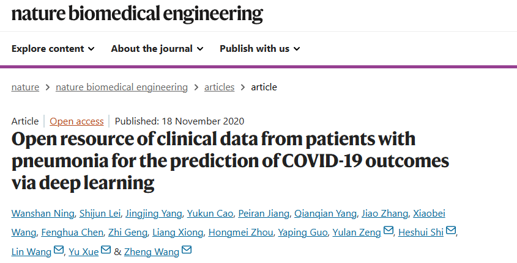 |
Open resource of clinical data from patients with pneumonia for the
prediction of COVID-19 outcomes via deep learning Wanshan Ning*, Shijun Lei*, Jingjing Yang*, Yukun Cao*, Peiran Jiang, Qianqian Yang, Jiao Zhang, Xiaobei Wang, Fenghua Chen, Zhi Geng, Liang Xiong, Hongmei Zhou, Yaping Guo, Yulan Zeng, Heshui Shi, Lin Wang, Yu Xue, Zheng Wang Nature Biomedical Engineering 4 (12), 1197-1207, 2020 [PubMed] [Code] [Dataset] |
|
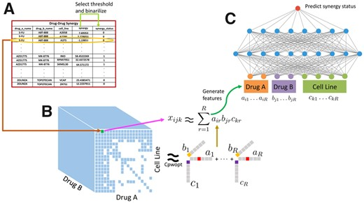 |
DTF: deep tensor factorization for predicting anticancer drug
synergy
Zexuan Sun, Shujun Huang, Peiran Jiang, Pingzhao Hu Bioinformatics 36 (16), 4483-4489, 2020 [PubMed] [Code] |
|
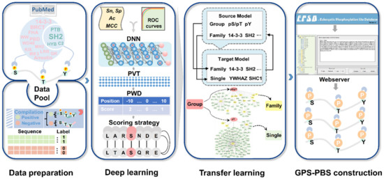 |
GPS-PBS: a deep learning framework to predict phosphorylation sites
that specifically interact with phosphoprotein-binding domains Yaping Guo, Wanshan Ning, Peiran Jiang, Shaofeng Lin, Chenwei Wang, Xiaodan Tan, Lan Yao, Di Peng, Yu Xue Cells 9 (5), 1266, 2020 [PubMed] |
|
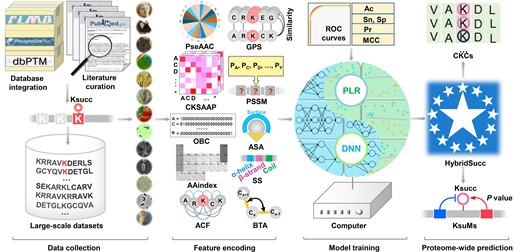 |
HybridSucc: a hybrid-learning architecture for general and
species-specific succinylation site prediction Wanshan Ning*, Haodong Xu*, Peiran Jiang, Han Cheng, Wankun Deng, Yaping Guo, Yu Xue Genomics, Proteomics & Bioinformatics 18 (2), 194-207, 2020 [PubMed] [Code] |
|
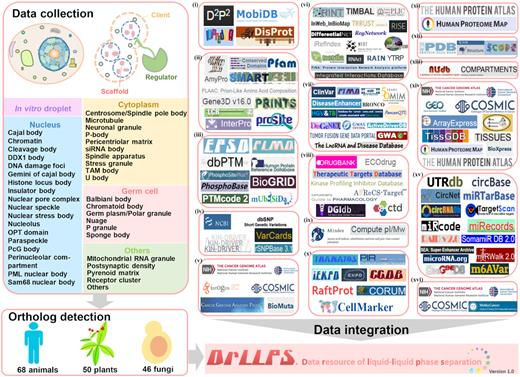 |
DrLLPS: a data resource of liquid–liquid phase separation in
eukaryotes
Wanshan Ning*, Yaping Guo*, Shaofeng Lin*, Bin Mei, Yu Wu, Peiran Jiang, Xiaodan Tan, Weizhi Zhang, Guowei Chen, Di Peng, Liang Chu, Yu Xue Nucleic Acids Research 48 (D1), D288-D295, 2020 [PubMed] [Dataset] |
|
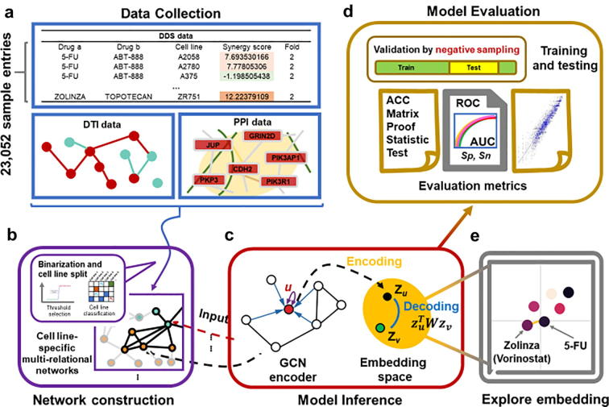 |
Deep graph embedding for prioritizing synergistic anticancer drug
combinations Peiran Jiang*, Shujun Huang*, Zhenyuan Fu, Zexuan Sun, Ted M Lakowski, Pingzhao Hu Computational and Structural Biotechnology Journal 18, 427-438, 2020 [PubMed] |